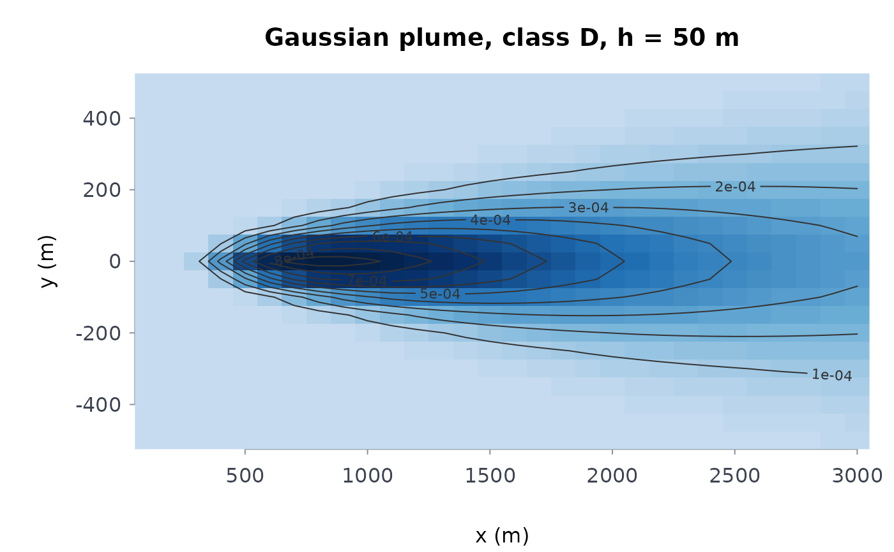

Evaluates gplume at every point of an x by
y ground-level grid (or at height z) and returns the field
as a matrix with the axes, ready for plot(). Use it to map where the
plume from a single stack touches the ground, how far downwind the
highest concentration lies, and how wide the affected area is.
Arguments
- q, u, h, stab, set, mixh, nimg
As in
gplume: emission rate (mass per second), wind speed (m/s), effective stack height (m), Pasquill class"A"to"F"(default"D"),"rural"(default) or"urban", mixing-lid height in metres (defaultNULL, no lid), number of lid image pairs (default3).- x, y
Numeric vectors, strictly increasing: the downwind and crosswind coordinates of the grid, in metres from the source.
- z
Numeric scalar, the receptor height in metres; default
0(ground level).
Value
A list of class rmbl_field: field (a numeric
matrix of concentrations, rows along x, columns along
y), x, y, dx and dy (median
spacings, NA for a single coordinate), units
("concentration") and title (character, used by the plot
method).
Details
Every grid point \((x_i, y_j, z)\) is passed to
gplume in one call, with the source at the origin
and the wind along \(+x\); the field is therefore zero (or vanishingly
small) upwind and at \(x \le 0\). The concentration is in the mass unit
of q per cubic metre (grams per cubic metre for q in grams
per second). dx and dy are the median grid spacings, used by
the plot method for the cell size. The cost is one plume evaluation per
grid point, so a 100 by 100 grid is 10,000 evaluations.
Errors: x or y not numeric or not strictly increasing;
z negative; and every check of gplume
(q, u, h, the stability class, the setting, the
mixing height).
See also
gplume; plot() draws the field as an
image with contours (see plot-methods).
Examples
f <- plmfld(
100,
5,
50,
x = seq(100, 3000, by = 100),
y = seq(-500, 500, by = 50)
)
dim(f$field)
#> [1] 30 21
plot(f)

# where the ground-level maximum lies, downwind
f$x[which.max(apply(f$field, 1, max))]
#> [1] 800
# a more unstable atmosphere brings the plume down sooner
fb <- plmfld(
100,
5,
50,
x = seq(100, 3000, by = 100),
y = seq(-500, 500, by = 50),
stab = "B"
)
fb$x[which.max(apply(fb$field, 1, max))]
#> [1] 300
# the coordinates must increase
try(plmfld(100, 5, 50, x = c(300, 100), y = c(-50, 0, 50)))
#> Error : `x` and `y` must be strictly increasing receptor coordinates